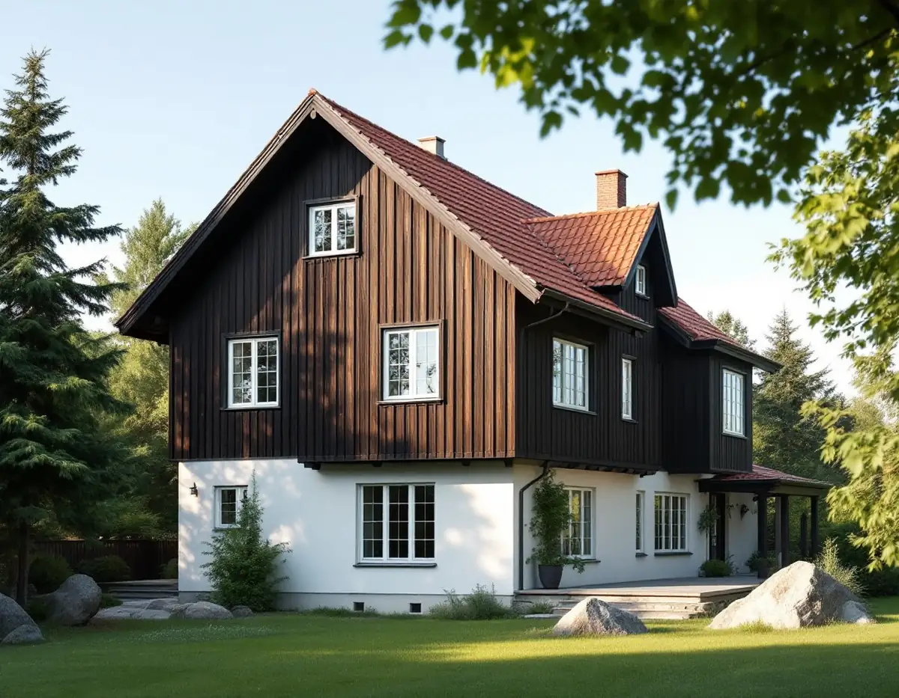
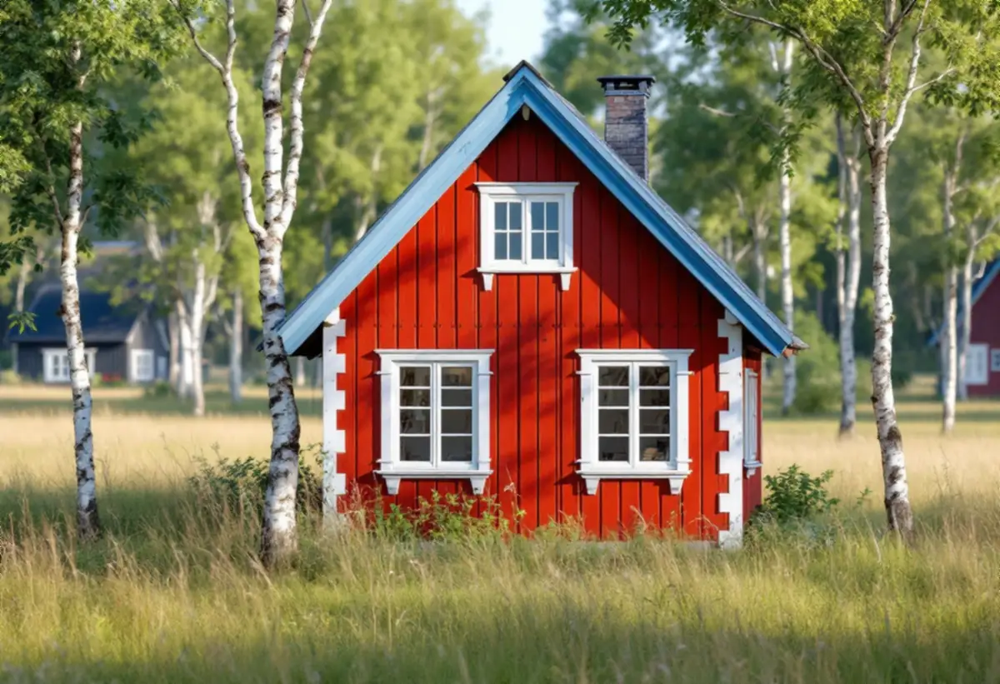

Platsbesök
Vi tittar på panel, puts, fönster och snickerier och gör skrapprov för att se vilken färgtyp som finns.

Ska huset på Lidingö målas om finns det sällan ett bättre underlag än stadens kulturmiljöprogram från 2024.
Beskriv jobbet kort.
Något blev fel. Kontrollera uppgifterna eller ring 08 12 410 276.
Vi tittar på jobbet på plats innan du får offert.
Du ser vad som ingår och vad det kostar.
Vi drar av ROT direkt och sköter ansökan.
Geal Entreprenad AB, Bromma. Org.nr 559303-7566.

Där beskrivs, område för område, vilka fasader och kulörer husen hade från början – från tjärad panel i Herserud till slammat tegel i Mölna. Geal Entreprenad AB tar målningsuppdrag ute och inne på hela ön, med gratis platsbesök och skriftligt kostnadsförslag.
Herseruds villastad. Flera av de tidiga villorna från omkring 1908–1915 är klädda med liggande panel och stående lockpanel i gavlarna. Kulturmiljöprogrammet skriver att panelen i regel var mörkfärgad eller tjärad från början, och att bottenvåningen inte sällan är slätputsad och ljus i kontrast mot den mörka övervåningen. Andra villor har mörk panel med listverk i vitt.
Lidingö villastad. Under 1920-talet byggdes villor i en klassicerande stil med förebilder i svenskt 1700-tal och empir. Fasaderna kläddes med locklistpanel eller puts i ljusa kulörer, med detaljer som hörnpilastrar och lunettfönster. Programmet säger att ursprunglig färgsättning och fasadmaterial bör vara vägledande vid ommålning.
Mölna radhusby. Nils Teschs radhus har fasader av slammat tegel avfärgat i ljust beigegrått. Programmet rekommenderar att fönster och ytterdörrar behålls och renoveras så långt som möjligt och målas med traditionella färgtyper, och att den ursprungliga färgsättningen bevaras.
Dalakolonin på Bosön. Här har de äldsta av omkring 60 stugor faluröd panel, ofta vitmålade spröjsade fönster och fönsterluckor. Bystugan från 1930 har faluröd panel, listverk i vitt och luckor i dalablått.
Lidingö stad skriver att bygglov för fasadändringar på en- och tvåbostadshus slopades den 1 december 2025, och nämner uttryckligen målning bland de ändringar som omfattas. Undantaget är de områden och byggnader som är särskilt värdefulla. De har utökad lovplikt, och i stadens webbkarta visas de som ett blått lager. Klickar du på din fastighet syns det om den omfattas.
Är fastigheten i stället gulmarkerad kan det enligt staden finnas värden som behöver bedömas, och då är rådet att kontakta kundcenter innan du bestämmer dig. Kulturmiljöprogrammet, som kommunfullmäktige antog den 16 december 2024, är inte juridiskt bindande men används som kunskapsunderlag vid bygglov.
Boverket påpekar att ett byte av färgtyp inte räknas som kulörbyte, men att det kan påverka husets karaktärsdrag. I Mölna, där programmet uttryckligen förordar traditionella färgtyper, är det därför klokt att låta färgtypen ingå i samma fråga som kulören.
En tjärad eller mörk panel från villastädernas första år kan ha strukits om med helt andra produkter under 1900-talet. Riksantikvarieämbetet varnar för att lägga moderna färger över äldre färgtyper och skriver att röd slamfärg som har blandats med trätjära normalt behöver samma tillsats även vid ommålning, för att färgen ska fästa och kulören bli jämn. Skrapprov på flera ställen visar vad som faktiskt sitter på.
På Dalakolonins stugor är frågan om slamfärgen ska fortsätta. Myndigheten är tydlig: en slamfärgsmålad yta ska bara målas om med slamfärg, och har man en gång gått över till en annan färgtyp går det inte att återvända, även om den gamla färgen tas bort.
Putsade bottenvåningar och slammade tegelfasader kräver en färg som fungerar med putsens sammansättning. Kalkfärg har god vidhäftning på kalkputs men dålig på cementrika underlag. Ska putsen lagas mer omfattande hör det hemma under fasadrenovering.
Lidingö är en ö, och många hus står högt i terrängen eller nära stranden. Väggar som vetter mot öppet vatten får mer sol, regn och blåst. Riksantikvarieämbetet skriver att söderfasader behöver målas om oftare än norrfasader och att fönster, vattbräder, trappor och räcken bör underhållsmålas löpande, eftersom målningen där har en direkt skyddande funktion.
Det betyder att alla sidor av ett hus sällan behöver samma insats samma år. En bättringsmålning av de mest utsatta delarna kan skjuta upp en hel ommålning. Ska taket ses över samtidigt som ställningen står uppe, kan takmålning eller plåtarbeten samordnas med fasaden.
Vi tittar på panel, puts, fönster och snickerier och gör skrapprov för att se vilken färgtyp som finns.
Vi kontrollerar om fastigheten ligger i det blå lagret och vad kulturmiljöprogrammet säger om området.
Färgtyp, kulör, underarbete och antal strykningar står med, och utsatta fasader kan prissättas för sig.
Tvätt, skrapning och lagning av trä eller puts, kittning av fönster och skydd av trädgården.
Grundning och strykningar i lämpligt väder, med de torktider färgtypen kräver.
Vi går igenom resultatet tillsammans och bättrar där det behövs.
I villa och radhus med äganderätt ger både fasadmålning, fönstermålning och invändig målning rotavdrag, men inte målning av staket eller murar. Avdraget är 30 procent av arbetskostnaden, högst 50 000 kr per person och år, och tillsammans med rutavdrag högst 75 000 kr. Färgen räknas som material.
I bostadsrätt gäller avdraget bara arbete inne i lägenheten, och för fönster bara insidan. Geal drar avdraget direkt på fakturan.
Priset beror mest på underarbetet: hur mycket gammal färg som måste bort, hur mycket trä eller puts som behöver lagas och hur många fönster med spröjs som ska kittas. Traditionella färgtyper kan kräva fler strykningar, och höga hus på branta tomter behöver mer ställning. Platsbesöket är gratis och du får ett skriftligt kostnadsförslag.
Fasad, fönster och invändig målning.
Målare i Stockholm →Takbyte, takbesiktning och plåtarbeten.
Takläggare på Lidingö →Brevik, Mölna och Käppala.
Takrenovering på Lidingö →Potten, avloppet och kulturmiljöerna.
Attefallshus på Lidingö →Värdefulla hus, kulör och bidrag.
Fasadmålning på Lidingö →Villastäderna och Brevik på Lidingö.
Fönsterbyte på Lidingö →Fönster i utpekade kulturmiljöer.
Fönsterrenovering på Lidingö →Slipa och behandla trägolv i kök och hall.
Golvslipning på Lidingö →Plåt i vind och värdefulla miljöer.
Plåtslagare på Lidingö →Nytt material, k-märkning och byggnadsminnen.
Takbyte på Lidingö →Ny tapet med hänsyn till huset.
Tapetsering på Lidingö →Webbkartan, programmet och frivilligt lov.
Tillbyggnad på Lidingö →Behåll stommen, bygg om resten.
Totalrenovering på Lidingö →Eller ring 08 12 410 276, mån–fre 08–17.
Beskriv jobbet kort.
Något blev fel. Kontrollera uppgifterna eller ring 08 12 410 276.